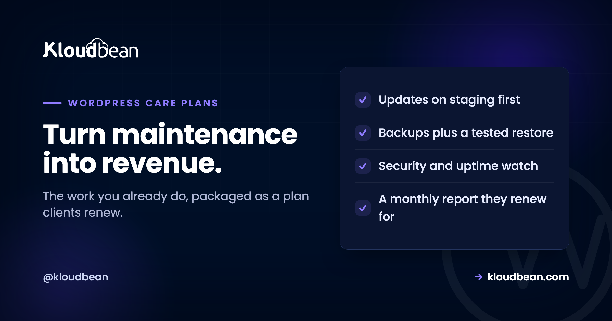

WordPress Maintenance Retainer Plans: Turn Unbilled Work Into Revenue

Most agencies are already running maintenance on their clients' WordPress sites. They update a plugin when something breaks, restore a backup when a site goes down, patch a vulnerability when they hear about it. The trouble is they do it reactively, invisibly, and for free, absorbed into goodwill and late nights. A maintenance retainer changes nothing about the work and everything about the business: it turns that invisible, reactive effort into a visible, recurring, proactive service the client pays for every month. This is how to design one that clients happily renew, without it becoming unlimited work for a fixed fee.
A recurring monthly service where you keep a client's WordPress site updated, backed up, secure, and online, for a fixed fee. A good one includes: plugin, theme, and core updates applied on staging first so an update never breaks the live site; automatic backups with a tested restore; security and uptime monitoring; a small allowance of content changes; and a monthly report that shows the client what you did. Tier it by update cadence, support response time, and hours of changes rather than by arbitrary labels, and define clearly what is included versus billable so scope does not creep. The monthly report is what actually keeps the client renewing, because it makes otherwise invisible work visible.
The reframe: you are already doing this for free
Before the mechanics, the business case, because it is the whole point.
Every site you built is quietly accumulating maintenance need: plugins go out of date, WordPress core ships security releases, a theme breaks against a PHP change, a contact form silently stops sending. Right now you handle these when the client emails in a panic, which means the work is reactive (you fire-fight instead of prevent), invisible (the client only sees the emergency, not the ten quiet fixes), and unpaid (it disappears into your overhead). A retainer flips all three: the work becomes proactive, visible, and a line of recurring revenue that does not require winning a new client to grow. For most agencies, maintenance retainers are the most reliable revenue they have, precisely because they are recurring and low-churn once the client sees the value.
What goes in the plan
A maintenance retainer is a bundle of specific deliverables, not a vague promise to "look after the site". Name them, because named things are billable and vague things are not.
| Deliverable | What it actually is |
|---|---|
| Updates | Plugin, theme, and core updates, applied on staging first and checked before going live |
| Backups | Automatic backups kept off-box, with a restore you have actually tested |
| Security | Baseline hardening and monitoring, so a known vulnerability is patched, not ignored |
| Uptime monitoring | You are alerted if the site goes down, and act, before the client notices |
| Small content changes | A defined monthly allowance: text edits, a new page, a swapped image |
| Monthly report | A short summary of what you did, which is what the client actually renews for |
Two of these carry the weight. Updates are where sites break, so they are the operational core and the next section. The monthly report is where the client perceives value, so it is what stops churn. Everything else is table stakes the client assumes you are doing anyway.
Updates are the core, and staging is non-negotiable
If a maintenance retainer has one job, it is applying updates without breaking the site, and the difference between a professional retainer and a risky one is a single word: staging.
WordPress sites break most often at exactly the moment they are supposed to get safer: an update. A plugin update conflicts with the theme, a core update deprecates a function a plugin relied on, an update to one plugin breaks a second. Clicking "update all" on a live production site and hoping is how an agency turns a maintenance plan into an outage it caused. The professional pattern is to apply updates on a staging copy first, confirm the site still renders and its key flows still work, and only then push the update to production. Staging for WordPress is what makes "we keep your site updated" a safe promise rather than a monthly gamble.
This is also the honest answer to why maintenance is worth paying for. The client could click update themselves. What they are paying you for is that you click it somewhere safe first, and that you know what to do when the update breaks something.
Tiers that map to real work
Bronze, silver, and gold mean nothing unless the tiers correspond to genuinely different amounts of work. Tier on the axes that actually cost you time, not on invented feature lists.
| Axis | Lower tier | Higher tier |
|---|---|---|
| Update cadence | Monthly | Weekly, or as releases land |
| Support response | Next business day | Same day, priority |
| Content changes | A small monthly allowance | More hours, faster turnaround |
| Reporting | A short monthly summary | Detailed report, a call, uptime stats |
| Backups retained | Standard retention | Longer history |
The point of tiering this way is that each step up costs you more to deliver and is worth more to the client, so the price difference is defensible. A tier that promises "priority support" but means the same thing you already do for everyone is not a tier, it is a label. How to set the actual prices on top of these tiers is the pricing-model question, covered in client billing and markup for hosting; the care plan there is exactly this retainer.
Scope creep is what kills retainers
The fastest way to make a maintenance retainer unprofitable is to leave "maintenance" undefined, because the client's definition expands to fill the fee.
Without a boundary, "can you just" requests accumulate: a small text edit becomes a new landing page becomes a new booking system, all under the flat monthly fee the client thinks covers "changes". The fix is to define, in writing, what is included and what is billable, and the cleanest line is between maintenance and new work.
| Included in the retainer | Billable as new work |
|---|---|
| Updating and fixing what already exists | Building something new |
| A text edit, an image swap, a small tweak | A new page template, a new feature, a redesign |
| Keeping the existing site working | Adding capability the site did not have |
| The defined monthly allowance of small changes | Anything beyond the allowance, quoted separately |
State this at the start, not the moment a request goes too far, because renegotiating scope mid-relationship feels like a bait-and-switch to the client even when you are right. A clear boundary set up front is generous; one enforced late feels mean.
The monthly report is the product
Here is the counterintuitive centre of a retainer that renews: the deliverable the client values most is not the updates or the backups, it is knowing they happened.
Maintenance done well is invisible. The site just keeps working, which is exactly the problem, because a client paying monthly for a site that "just works" starts to wonder what they are paying for. The monthly report solves that. A short summary, plugins updated, backups verified, uptime for the month, security items handled, changes made, turns your invisible work into something the client can see and value. It is the single highest-leverage thing in the whole plan for retention, because it answers the renewal question before the client asks it. Ironically, the better your maintenance, the more you need the report, because a flawless month is the one that looks like you did nothing.
What production adds to WordPress Maintenance Retainer Plans
A maintenance retainer is a promise, and the platform is what lets you keep it at scale. Staging for WordPress is what makes "we update your site safely" true rather than hopeful, since every update runs on a copy first. Automatic backups kept off-box give you the tested restore the plan promises, free SSL keeps HTTPS handled without a line item, and the baseline security hardening, Shorewall and Fail2ban, means the security deliverable is real rather than aspirational. Managed updates and patching at the server and stack level mean you are maintaining the application, not fighting the infrastructure underneath it. All of it across seven clouds from one account, so a fleet of retainer clients is one dashboard rather than a scattered set of logins.
The honest boundary is clean. The platform provides the staging, backups, security, and patching that make the deliverables possible; the plan design, the client relationship, the small changes, and above all that monthly report are your service. The platform makes the promise keepable; keeping it, visibly, is what the client pays you for.
If WordPress Maintenance Retainer Plans was the symptom, not the cause
How to price these tiers is client billing and markup for hosting, where the care plan is exactly this retainer. The hosting underneath is agency WordPress hosting, and keeping those sites fast is speed up WordPress. The backups the plan depends on, at fleet scale, are in the multi-client backup strategy. The wider operation is the hosting for agencies playbook, and a client joins via the onboarding checklist.
Let someone else patch the server.
The stack, the patching, SSL, and backups are handled, so your work stays on the site rather than the box. Staging is one click, and the managed database sits right next to the app.
- ✓ Managed WordPress stack
- ✓ One-click staging
- ✓ Managed MySQL and MariaDB
- ✓ Automatic backups
- ✓ Free SSL
- ✓ Built-in load balancer
FAQ
What should a WordPress maintenance retainer include?
Plugin, theme, and core updates applied on staging first, automatic backups with a tested restore, security and uptime monitoring, a defined monthly allowance of small content changes, and a monthly report showing what you did. Those are the deliverables; the two that carry the most weight are updates, because that is where sites break, and the report, because that is where the client perceives the value they are paying for.
Why apply updates on staging instead of the live site?
Because WordPress sites break most often during updates, when a plugin, theme, or core change conflicts with something else. Applying updates on a staging copy first lets you confirm the site still works before anything reaches production, so an update never takes the live site down. That safety is a large part of what the client is actually paying a maintenance retainer for, since they could click update themselves but not do it somewhere safe first.
How should I tier maintenance plans?
Tier on the axes that genuinely cost you more time and are worth more to the client: update cadence, support response time, the allowance of content changes, reporting depth, and backup retention. Avoid tiers that differ only by label, because a "priority" tier that means the same work as the basic one is not defensible. Each step up should cost you more to deliver, which is what justifies charging more for it.
How do I stop scope creep on a maintenance retainer?
Define in writing what is included versus billable, using the line between maintaining what exists and building something new. Updating, fixing, and small tweaks within a monthly allowance are maintenance; new pages, new features, and redesigns are new work quoted separately. Set this boundary at the start, because enforcing it late feels like a bait-and-switch to the client even when you are in the right.
Why does the monthly report matter so much?
Because good maintenance is invisible: the site just keeps working, and a client paying monthly for something that "just works" starts to question the cost. The report makes your invisible work visible, listing updates applied, backups verified, uptime, and changes made, which answers the renewal question before it is asked. The better your maintenance, the more you need the report, because a flawless month looks like you did nothing.
Are maintenance retainers worth it for a small agency?
Usually yes, because they are the most reliable revenue a small agency can build. Unlike project work, a retainer recurs without you winning a new client each month, and it has low churn once the client sees the value in the monthly report. You are also already doing much of the work reactively and unpaid, so a retainer largely converts existing effort into income rather than adding new work.
How is a maintenance retainer different from hosting?
Hosting is the infrastructure the site runs on; a maintenance retainer is the ongoing service of keeping the site itself updated, backed up, secure, and working. They complement each other: managed hosting provides the staging, backups, and security that make the retainer deliverable, while the retainer is your service layer on top. Many agencies bundle both into one monthly care plan the client sees as a single fee.
What response time should I promise?
Whatever you can actually meet, stated explicitly per tier, rather than a vague promise to handle things. A basic tier might be next business day and a higher tier same day, and the difference is a genuine reason for a client to pay more. The key is that the commitment is real and consistent, because a response time you miss damages trust more than a slower one you always meet.